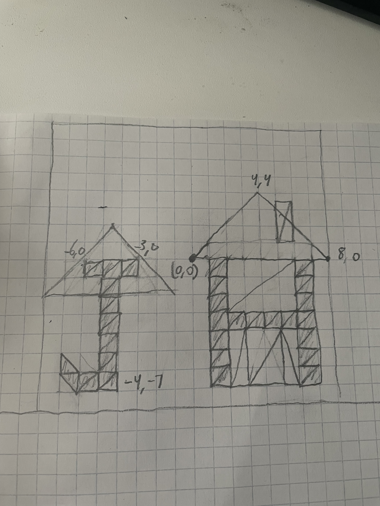

Julien Howard | jphoward@ucsc.edu
Notes to Grader: Awesomeness feature is alpha transparency — the opacity slider enables transparent brush strokes, and the smoke in the picture uses layered transparent triangles. Both use gl.enable(gl.BLEND).
